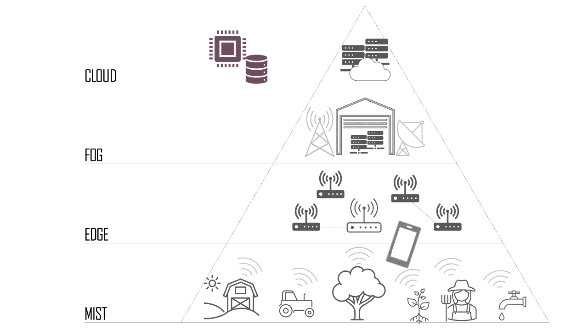

Computació en el núvol
1. Antecedents
El desenvolupament de la computació en el núvol va començar a finals dels anys seixanta. Les empreses començaren a utilitzar ordinadors centrals (anomenats mainframes). Que cada usuari tinguera el seu propi equip era massa costós, així que es va desenvolupar un sistema de processament de temps compartit, que permetia a diversos usuaris accedir i utilitzar recursos informàtics centralitzats. Esta idea representa el primer ús de recursos informàtics compartits, que formen la base de la computació en el núvol moderna.
En la dècada dels 2000, amb l’aparició d’internet, la computació en el núvol començà a prendre una forma més tangible amb l’arribada de les màquines virtuals, que permetien als usuaris executar múltiples sistemes informàtics en una única configuració física.
En les dècades dels setanta i huitanta, les empreses tecnològiques referents (Microsoft, Apple i IBM) desenvolupen tecnologies que milloraren els entorns de núvol i ampliaren l’ús de servidors en el núvol i serveis d’allotjament de servidors, però no és fins a 1999 quan l’empresa Salesforce es convertí en la primera en oferir aplicacions empresarials a través de la web.
En 2006, Amazon llança Amazon Web Services (AWS), que oferix serveis com computació en el núvol i emmagatzematge de dades. Este moviment inicial d’Amazon marca el començament d’una nova era en la informàtica, donant peu a una competència intensa en el sector. Microsoft introdueix Azure en 2010, oferint una àmplia gamma de serveis en el núvol, incloent-hi solucions de computació, anàlisi, emmagatzematge i bases de dades. Google irromp en 2011 amb el llançament de Google Cloud Platform, proporcionant serveis similars als de AWS i Azure, però destacant en la integració de les seues pròpies tecnologies de búsqueda i anàlisi de dades.
1.2. Definició
El terme computació en el núvol (o cloud computing), l’analogia del núvol prové del món dels diagrames de xarxa, on sol representar-se Internet amb un núvol. Este concepte abstracte encapsula una idea bàsica que dóna suport a la definició: la disponibilitat de recursos i serveis informàtics a través de la xarxa gràcies a la connexió a internet.
Tal com hem comentat, la computació en el núvol no implica que la informació i els recursos informàtics es troben en el dispositiu de l’usuari, sinó que estes es gestionen i emmagatzemen a través d’un servidor remot. Això permet accedir a una varietat de serveis i recursos, sense la preocupació de mantindre el maquinari o el programari localment.
2. Models de núvol
Com ja hem dit, la computació en el núvol permet disposar d’una àmplia varietat de recursos.
Quan es decideix utilitzar el núvol en un entorn, ja siga personal o professional, és convenient conéixer que existeixen diferents models de núvol, dels quals podríem dir, de forma molt simplificada, que es diferencien per la quantitat de recursos que es posen a la nostra disposició.
-
Núvol públic
Un núvol públic és un conjunt de recursos proporcionats íntegrament per una entitat externa. Estos recursos, que estan derivats d'una infraestructura de hardware que pertany a qui presta este model de núvol, es posen a disposició dels usuaris (particulars o empreses) a través d’una interfície d’autoservei automatitzada.
Els serveis en un núvol públic estan disponibles per a qualsevol usuari amb connexió a internet, el que permet el accés des de qualsevol ubicació.
D’altra banda, es tracta d’un model que facilita el desplegament ràpid d’aplicacions i serveis, ja que el proveïdor sol oferir les capacitats preconfigurades i llestes per a usar.
Una de les principals avantatges d’este model és la escalabilitat a demanda; és a dir, la capacitat d’escalar (augmentar o reduir) els recursos de manera dinàmica segons les necessitats de l’usuari, ja siga la capacitat de processament, d’emmagatzematge o qualsevol altre servei.
Es basen en un model de pagament per ús, en el qual els usuaris paguen només pels recursos que consumeixen durant un període específic. Esto reduïx les despeses de manteniment de la infraestructura i permet una major eficiència financera. A més, es gestionen tots els recursos, com ara potència de càlcul, emmagatzematge, anàlisi de dades, serveis d’intel·ligència artificial i molts altres, els quals es poden escalar i optimitzar costos.
El proveïdor del núvol públic s’encarrega del manteniment de la infraestructura i les actualitzacions de software, alliberant l’usuari d’estes responsabilitats.
Els principals proveïdors del model de núvol públic són AWS, Microsoft Azure i Google Cloud Platform (GCP).
-
Núvol privat
Un núvol privat és utilitzat per una única organització i proporciona un major control sobre la infraestructura i els recursos.
En este model, la empresa és responsable de tots els costos associats: dotació de personal per a la gestió i manteniment, adquisició i manteniment de la infraestructura...
No obstant això, existeixen proveïdors que ofereixen núvols privats com a servei gestionat.
Este tipus de servei permet a les empreses crear i operar un núvol privat implementat, configurat i administrat per personal especialitzat sense haver de gestionar elles mateixes el núvol privat diàriament.
Els núvols privats permeten una major personalització de la infraestructura per a satisfer requisits específics de l’organització, el que facilita l’adaptació a polítiques internes i regulacions.
Els principals proveïdors de núvol privats són VMware i OpenStack. També existeixen sol·lucions lliures com OwnCloud o Proxmox.
-
Núvol híbrid
Un núvol híbrid és una infraestructura que combina recursos i serveis de núvols públiques i privades, permetent la transferència de dades i aplicacions entre elles, segons les necessitats de l’usuari.
Este model aprofita el millor d'ambdós mons; així, per exemple, una empresa pot allotjar dades crítiques en entorns privats per controlar el compliment de regulacions i mantindre la seguretat dels recursos directament, i a la vegada, proporcionar flexibilitat per escalar recursos i distribuir la càrrega de treball entre entorns públics segons siga necessari.

-
Model multinúvol
El model multinúvol implica la integració de dos o més núvols del mateix tipus (pública o privada) que es creen per distintes proveïdors, en lloc de dependre exclusivament de un proveïdor.
La característica diferenciadora, sobre tot del model de núvol híbrida, és la diversitat de proveïdors. Així, una empresa pot seleccionar els serveis que més li interessen de cada proveïdor i interconnectar-los, la qual cosa aprofita les fortaleses particulars de cada proveïdor i reduïx la dependència.

Taula resum:
| Característica | Núvol pública | Núvol privada | Núvol híbrida | Multinuvol |
|---|---|---|---|---|
| Accés a recursos | Obert al públic en general | Restringit a una única organització | Combinació d’accés públic i privat | Utilitza serveis de múltiples proveïdors simultàniament |
| Control i seguretat | Menys control, major dependència del proveïdor | Control total sobre la infraestructura i els recursos | Major control i seguretat en la núvol privada | Control i seguretat distribuïts entre múltiples proveïdors |
| Flexibilitat i escalabilitat | Altament escalable i flexible | Escalabilitat i flexibilitat adaptades a requisits interns | Escalabilitat dinàmica, adaptabilitat a demandes | Flexibilitat per a elegir serveis òptims de diferents proveïdors |
| Costos i model de pagament | Pagament per ús, model de costos variable | Costos més previsibles i generalment més alts | Variables, costos dependents de cada entorn | Optimització de costos en elegir serveis de diferents proveïdors |
| Implementació i manteniment | Ràpida implementació; manteniment gestionat pel proveïdor | La implementació pot ser més lenta; manteniment intern | Requereix integració i manteniment continu de ambdós entorns | Implementació distribuïda entre serveis; manteniment distribuït |
| Compliment normatiu | Complix en regulacions específiques del proveïdor | Permet major control i adaptabilitat a regulacions internes | Possibilitat d’allotjar dades crítiques internament per a complir normatives | Les organitzacions seleccionen proveïdors compatibles amb normatives |
| Resiliència i continuïtat del negoci | Risc de dependència d'un sol proveïdor | Major dependència de proveïdors externs; més control | Major resiliència al distribuir càrregues de treball | Resiliència millorada amb diversificació entre proveïdors |
| Aplicacions i càrregues de treball | Adequada per a aplicacions no crítiques i càrregues variables | Ideal per a aplicacions crítiques que requerixen seguretat | Versatilitat per a allotjar tant aplicacions crítiques com no crítiques | Adaptabilitat per a distintos tipus de aplicacions i serveis |
3. Serveis en el núvol
Els models de servei en el núvol, també coneguts com models d’implementació en el núvol, descriuen com s’ofereixen i es consumixen els serveis en el context del núvol. Estos models definixen les relacions entre proveïdors i usuaris finals, així com la gestió de recursos i responsabilitats.
A continuació, es poden veure els tres models principals de serveis en el núvol:
3.1. Infraestructura com a servei (IaaS)
En el model IaaS, els usuaris tenen accés remot a una infraestructura (hardware) virtualitzada a través d’internet. Esto inclou recursos com servidors virtuals, emmagatzematge i xarxes que són gestionats i escalats segons les demandes de l’usuari.
Les principals característiques d'IaaS són:
- Virtualització de recursos: s’utilitza la virtualització per oferir recursos computacionals, d’emmagatzematge i xarxes.
- Escalabilitat dinàmica: la capacitat d’augmentar o disminuir recursos segons les necessitats empresarials.
- Control total: els usuaris mantenen control total sobre el sistema operatiu, configuracions i aplicacions.
- Model de pagament per ús: la facturació es realitza d’acord amb l’utilització real dels recursos, evitant costos fixos.
El principal inconvenient de este model és la complexitat en la gestió de la infraestructura, requerint habilitats tècniques avançades. També cal tindre en compte que l'escalabilitat és manual (el que li resta agilitat) i que el cost és variable, el que dificulta la gestió pressupostària. El model IaaS té un gran avantatge: l’accés a recursos de hardware que, d’altra manera, exigiria una inversió que normalment no és possible assumir.
Exemples de serveis IaaS inclouen EC2 d’Amazon Web Services (AWS), Google Compute Engine (GCE) de Google Cloud Platform i Azure Virtual Machines de Microsoft Azure.
3.2. Plataforma com a servei (PaaS)
El model de PaaS proporciona als desenvolupadors un entorn complet per al desenvolupament, implementació i execució d’aplicacions. Se’ls allibera de preocupacions sobre la infraestructura subjacent, permetent el desenvolupament de aplicacions de manera eficient.
Les principals característiques de PaaS són:
- Entorn de desenvolupament complet: oferix ferramentes i serveis, com entorns de desenvolupament, bases de dades, per a facilitar el desenvolupament d'aplicacions.
- Implementació senzilla i àgil: permet el desplegament senzill d’aplicacions sense preocupar-se per la gestió de servidors.
- Escalabilitat automàtica: la plataforma gestiona automàticament les necessitats de l’aplicació.
- Gestió simplificada de recursos: els desenvolupadors se centren en el lògica de l’aplicació, delegant la gestió de la infraestructura a la plataforma.
El principal inconvenient de este model és la limitació en la personalització de la infraestructura. Per tant, les decisions tècniques poden tindre una dependència significativa del proveïdor de serveis. No obstant això, com en el model IaaS, suposa un considerable estalvi en entorns de treball on no siga necessari disposar de la plataforma, no del hardware.
Exemples de PaaS inclouen Google App Engine, Microsoft Azure App Service, Amazon Elastic Beanstalk i Heroku.
3.3. Software com a servei (SaaS)
El model de SaaS oferix aplicacions preparades per a usar a través d’internet. Els usuaris accedeixen a estes aplicacions a través d’un navegador web, el que elimina la necessitat d’instal·lació i manteniment local.
Les principals característiques de SaaS són:
- Accés a aplicacions remotes: les aplicacions són accessibles directament des de la núvol sense instal·lació local.
- Gestió centralitzada: el proveïdor s’encarrega de la gestió, manteniment i actualitzacions de la aplicació.
- Model de pagament per subscripció: la facturació es realitza mitjançant el model de subscripció periòdica.
- Escalabilitat segons usuaris: l’escalabilitat s’ajusta fàcilment al número de usuaris.
El principal inconvenient de este model, com succeïx amb el PaaS, és la limitació en la personalització, ja que estan dissenyades per a ser genèriques i utilitzades per una àmplia audiència. Del mateix mode, existix una dependència significativa del proveïdor de serveis. Per últim, encara que els proveïdors de SaaS solen oferir alts estàndards de seguretat, algunes organitzacions poden tindre preocupacions sobre la privacitat de les dades, especialment si la informació sensible s’emmagatzema en la núvol.
A més, la funcionalitat i fins i tot els preus de les solucions SaaS depenen de qui va a ser el seu públic objectiu:
- Solucions SaaS B2B (de empresa a empresa), que estan orientades a proporcionar un servei específic a altres empreses. Per exemple, CRM, eines de comptabilitat o plataformes de màrqueting...
- Solucions SaaS B2C (de empresa a consumidor), que estan orientades a oferir un servei a l'usuari final. Per exemple, serveis de streaming o de galeria instantània...
A més d’esta classificació, les solucions SaaS solen categoritzar-se en funció del seu abast dins de l’organització:
- SaaS horitzontal: dissenyat per a cobrir necessitats empresarials generals, com gestió de recursos humans, gestió financera, col·laboració i comunicació. Es caracteritza per la versatilitat i adaptabilitat a diverses indústries.
- SaaS vertical: orientat a sectors específics amb necessitats particulars, com ara la indústria farmacèutica, biotecnologia, legal o educació.
Una comparació habitual seria entre Microsoft 365 i Google Workspace, que inclouen correu electrònic, processament de textos, fulls de càlcul i altres ferramentes de col·laboració. Estes són solucions SaaS horitzontals.
Vocabulari
- IaaS: Infrastructure-as-a-service, o infraestructura com a servei.
- PaaS: Platform-as-a-service, o plataforma com a servei.
- SaaS: Software-as-a-service, o software com a servei.
- XaaS: everything-as-a-service, o tot com a servei.
- B2B: Business-to-business, o empresa a empresa.
- B2C: Business-to-consumer, o empresa a consumidor.

A manera de resum, en la següent imatge es poden observar els principals models de serveis en el núvol juntament amb les capes gestionades per l’usuari i el proveïdor en cadascun d’ells.
| Tradicional (on premise) | IaaS | PaaS | SaaS |
|---|---|---|---|
| Aplicacions (gestionat per usuari) | Aplicacions (gestionat per usuari) | Aplicacions (gestionat per usuari) | Aplicacions (gestionat per proveïdor) |
| Dades (gestionat per usuari) | Dades (gestionat per usuari) | Dades (gestionat per usuari) | Dades (gestionat per proveïdor) |
| Software intermedi (gestionat per usuari) | Software intermedi (gestionat per usuari) | Software intermedi (gestionat per proveïdor) | Software intermedi (gestionat per proveïdor) |
| Sistema operatiu (gestionat per usuari) | Sistema operatiu (gestionat per usuari) | Sistema operatiu (gestionat per proveïdor) | Sistema operatiu (gestionat per proveïdor) |
| Virtualització (gestionat per usuari) | Virtualització (gestionat per usuari) | Virtualització (gestionat per proveïdor) | Virtualització (gestionat per proveïdor) |
| Servidors (gestionat per usuari) | Servidors (gestionat per usuari) | Servidors (gestionat per proveïdor) | Servidors (gestionat per proveïdor) |
| Emmagatzematge (gestionat per usuari) | Emmagatzematge (gestionat per proveïdor) | Emmagatzematge (gestionat per proveïdor) | Emmagatzematge (gestionat per proveïdor) |
| Xarxa (gestionat per usuari) | Xarxa (gestionat per proveïdor) | Xarxa (gestionat per proveïdor) | Xarxa (gestionat per proveïdor) |
Aquests models no són excloents; de fet, es poden integrar per crear un entorn de núvol complet que aborde diverses necessitats empresarials.
La elecció entre IaaS, PaaS i SaaS depèn dels objectius i requisits de l’organització. IaaS ofereix més control sobre la infraestructura, mentre que PaaS ofereix una plataforma gestionada, equilibrant control i simplificació. SaaS proporciona aplicacions llestes per usar sense preocupacions sobre la infraestructura.
3.4. El model de tot com a servei (XaaS)
XaaS, que significa tot com a servei, és un terme col·lectiu que engloba una àmplia gamma de serveis i solucions dissenyats per ser oferts a través d’internet en lloc de ser proporcionats localment o gestionats in situ.
Aquest model es basa en el núvol i representa l’evolució i expansió dels conceptes de SaaS, PaaS i IaaS, entre altres.
Les seves principals característiques són:
- Flexibilitat: els usuaris poden personalitzar els serveis segons les seves necessitats específiques, triant i pagant només pel que utilitzen.
- Escalabilitat: facilitat per escalar els serveis cap amunt o cap avall depenent de la demanda, sense la necessitat de canvis significatius en la infraestructura física.
- Cost-eficiència: redueix la necessitat d’inversions inicials grans en hardware i software, i converteix els costos de capital en costos operatius predictibles.
- Accés remot: permet l’accés a serveis i dades des de qualsevol lloc, proporcionant models de treball flexibles i a distància.
XaaS ha crescut per incloure pràcticament qualsevol tipus de servei o producte que es puga entregar a través del núvol, oferint a les empreses i consumidors, entre altres, els següents avantatges::
- Innovació accelerada: permet a les empreses adoptar noves tecnologies ràpidament sense necessitat d’expertesa especialitzada o inversions significatives.
- Manteniment reduït: els proveïdors de serveis s’encarreguen del manteniment, les actualitzacions i la gestió de la infraestructura.
- Millora en la competitivitat: facilita a les petites i mitjanes empreses l’accés a tecnologies i serveis que d’altra manera estarien fora del seu abast, anivellant el camp de joc amb empreses més grans.
El model XaaS representa una tendència creixent cap a l’externalització d’infraestructura IT de l’empresa; no obstant, cal tenir en compte tres aspectes clau a l’hora d’adoptar-lo:
- Dependència d’una connexió a internet estable: interrupcions o inestabilitats poden provocar temps d’inactivitat significatius, impactant negativament la productivitat.
- Elecció de proveïdors de confiança: la seguretat i privacitat de les dades són fonamentals en l’adopció de serveis XaaS. Seleccionar proveïdors que compleixin amb estàndards de seguretat i oferisquen compromisos respecte a la protecció de dades és crucial per evitar bretxes i garantir la confidencialitat de la informació.
- Gestió de relacions amb múltiples proveïdors: administrar múltiples relacions amb proveïdors de XaaS presenta desafiaments relacionats amb la coordinació de contractes, la integració de serveis i la gestió d’expectatives de rendiment.
Alguns exemples de serveis XaaS inclouen:
-
Desktop-as-a-Service
Desktop com a servei (DaaS) és un exemple de XaaS en el qual es virtualitza l’escriptori de l’equip perquè l’usuari puga accedir a ell i les seues aplicacions des de qualsevol dispositiu amb connexió a internet. -
Artificial Intelligence as a Service (AIaaS)
Intel·ligència artificial com a servei (AIaaS) és un exemple de XaaS en el qual es ofereixen eines i entorns d’intel·ligència artificial per permetre a les empreses implementar solucions d’IA sense adquirir una infraestructura costosa.
4. Possibilitats de feina en el núvol
La computació en el núvol ha transformat radicalment la forma en què les empreses implementen i gestionen la seva infraestructura IT, oferint solucions flexibles i escalables que s’adapten a una varietat de necessitats operatives.
4.1. Solucions utilitzant el model IaaS
Algunes de les principals possibilitats de feina que es poden abordar al núvol utilitzant el model IaaS són les següents:
-
Serveis de computació
Ofereixen recursos de processament de dades com CPU, GPU i clústers d'alt rendiment. Aquests serveis permeten l’escalat de recursos d’acord amb la demanda, gestionen grans volums de dades i executen aplicacions complexes.
Alguns exemples d’aquests serveis són AWS EC2, Google Compute Engine o Microsoft Azure VM. -
Serveis d’emmagatzematge
Proporcionen espais per a l’emmagatzematge de dades al núvol amb alta disponibilitat i seguretat. Tot i que es poden confondre amb serveis de còpia de seguretat, aquests serveis no estan orientats a gestionar còpies de seguretat, sinó simplement a emmagatzemar informació.
Alguns exemples d’aquests serveis són Amazon S3, Azure Blob Storage o Google Cloud Storage. -
Serveis de còpia de seguretat
Ofereixen solucions per a la protecció de dades mitjançant còpies de seguretat automàtiques i sistemes de recuperació davant desastres, assegurant la integritat i la disponibilitat de la informació.
Alguns exemples d’aquests serveis són AWS Backup, Azure Backup, Veeam Backup o Acronis Cyber Protect. -
Serveis de xarxa
Aquests serveis ofereixen infraestructura de xarxa al núvol, incloent equilibradors de càrrega, VPN i DNS per facilitar la connectivitat i la gestió de xarxes.
Alguns exemples d’aquests serveis són AWS VPC, Azure Load Balancer i Google Cloud DNS.
4.2. Solucions utilitzant el model PaaS
Algunes de les principals possibilitats de feina que es poden abordar al núvol utilitzant el model PaaS són les següents:
-
Gestió del cicle de vida d’aplicacions (ALM)
Aquests serveis integren la planificació, desenvolupament, prova, desplegament i manteniment d’aplicacions de software. Faciliten la col·laboració entre equips i l’automatització de processos de desenvolupament. Es tracta de solucions orientades a un perfil d’usuari molt específic, dedicat a tasques de desenvolupament i manteniment d’aplicacions tant en entorn web com multiplataforma.
Alguns exemples d’aquests serveis són Atlassian JIRA, Microsoft Azure DevOps, GitLab o Red Hat OpenShift. -
Portals d’aplicacions
Proporcionen infraestructures i eines per al desenvolupament i allotjament de portals web empresarials, amb funcionalitats com gestió de continguts, personalització i serveis de cerca.
Alguns exemples d’aquests serveis són Liferay Portal i Oracle WebCenter. -
Plataformes de desenvolupament d’aplicacions sense servidor
Aquestes plataformes permeten el desenvolupament d’aplicacions sense la necessitat de gestionar la infraestructura subjacent. Proporcionen un entorn sense servidor que escala automàticament segons la demanda, cosa que redueix la complexitat operativa.
Alguns exemples d’aquests serveis són AWS Lambda i Azure Functions.
4.3. Solucions utilitzant el model SaaS
Algunes de les principals possibilitats de feina que es poden abordar al núvol utilitzant el model SaaS són les següents:
-
Continguts, comunicació i col·laboració
Solucions basades al núvol que faciliten la comunicació interna i externa, la col·laboració en equip i la gestió de continguts, millorant la productivitat i l’eficiència.
Alguns exemples d’aquests serveis són Microsoft Teams, Slack o Google Workspace. -
Paquets de programari d’oficina
Proporcionen suites d’aplicacions d’oficina al núvol, incloent processadors de text, fulls de càlcul i eines de presentació. És un dels serveis més demandats pels usuaris, ja que permet treballar de manera col·laborativa sense necessitat de tenir el software instal·lat als equips.
Alguns exemples d’aquests serveis són Microsoft 365 i Google Workspace. -
Programari de gestió empresarial
Ofereixen solucions de programari al núvol per a la gestió integral d’empreses, incloent CRM, ERP i recursos humans. Optimitzen els processos empresarials.
Alguns exemples d’aquests serveis són SAP Business One, Microsoft Dynamics 365, Oracle NetSuite, Ekon, Moloni, Holded o Macrogres. -
Programari de màrqueting
Ofereixen eines en línia per a la gestió de marketing, automatització de marketing i anàlisi de dades, millorant l’efectivitat de les estratègies de marketing.
Alguns exemples d’aquests serveis són Adobe Marketing Cloud, HubSpot, Mailchimp, Mailjet, MDirector o Acrelia News. -
Programari de gestió de projectes
Aquests serveis faciliten la planificació, seguiment i col·laboració en projectes empresarials, optimitzant la gestió de recursos i terminis.
Alguns exemples d’aquests serveis són Microsoft Project, GanttPro, Jira o Trello.
Vocabulari
- CPU: central processing unit, o unitat central de procés (processador).
- GPU: graphics processing unit, o unitat de processament gràfic.
- VPN: virtual private network, o xarxa privada virtual.
- DNS: domain name server, o servidor de noms de domini.
- ALM: application lifecycle management, o gestió del cicle de vida de les aplicacions.
Navega
Cada vegada són més les empreses i startups que es llancen al mercat creant solucions SaaS de tot tipus.
En aquest article s’enumeren deu startups espanyoles que ofereixen solucions SaaS: des de l’eliminació de contingut negatiu a internet a la gestió de campanyes d’influencers, passant per aplicacions per digitalitzar negocis d’hostaleria o mobilitat sota demanda.
5. Edge computing
L'edge computing (o computació en la vora) és un paradigma informàtic que es distingeix per la seua capacitat de processar dades en la perifèria de la xarxa, en un dispositiu amb capacitat de còmput anomenat node edge, pròxim al que genera les dades, reduint la necessitat d'enviar les dades al núvol per al seu anàlisi i processament.
A diferència dels models més tradicionals, centrats en el núvol, on tot el processament ocorre en ubicacions remotes, el edge computing descentralitza aquest procés, permetent que certes tasques es realitzen localment en els nodes edge.
En termes simples, es podria considerar que posa el focus del processament en el lloc on es necessiten respostes, evitant el viatge d'anada i tornada al núvol per a cada sol·licitud de processament.
Aquest paradigma no reemplaça el núvol; més bé, el complementa. El núvol continua essent essencial per a emmagatzemar grans volums de dades, realitzar anàlisis complexos i oferir serveis avançats. Però on edge computing brilla és en l’optimització de recursos al processar dades localment en temps real. En lloc de dependre exclusivament del núvol, aquest enfocament permet prendre decisions més ràpides i eficients en la vora de la xarxa, on l'acció és immediata i la connectivitat constant amb el núvol no sempre és pràctica. Vegem-ho amb alguns exemples il·lustratius:
-
Internet de les coses (IoT)
Escenari tradicional: en un entorn purament basat en el núvol, les dades dels sensors IoT s'enviarien de forma individual al núvol per al seu processament i, segons estiga establit, tornaran ordres per executar com a resposta a la informació proporcionada i el resultat del seu processament.
Amb edge computing: ací, les dades dels sensors es processen localment en els nodes edge, permetent respostes instantànies i reduint la dependència de la connectivitat constant amb el núvol. Un exemple concret seria la monitorització en temps real de la temperatura en una instal·lació industrial. -
Aplicacions de streaming
Escenari tradicional: la transmissió en viu (streaming) sol dependre del núvol per al processament i la distribució del contingut.
Amb edge computing: es permet la distribució de contingut en temps real des de servidors propers a l'usuari final, millorant la qualitat de la transmissió i reduint la latència. Un exemple pràctic seria la transmissió d’esdeveniments esportius, on la latència mínima és essencial per a l’experiència de l’espectador. - Vehicles autònoms
Escenari tradicional: els vehicles autònoms confien en el núvol per a processar centralment les dades de tots els seus sensors i retornar els valors i respostes associats, segons hagen sigut programades les situacions i comportaments en el vehicle.
Amb edge computing: el vehicle pot prendre decisions locals ràpides sense dependre completament de la connectivitat constant amb el núvol, millorant la seguretat. Un exemple seria la capacitat de resposta immediata d’un vehicle autònom davant una situació d’emergència.
Com podem deduir dels exemples, els principals avantatges de l'edge computing són:
-
Latència reduïda: al processar dades localment, es minimitza el temps que triga la informació en viatjar d’un punt a un altre, essencial per a aplicacions que requereixen respostes quasi instantànies. Això es veu clarament en sistemes de realitat virtual augmentada, on la latència mínima és crítica per a una experiència immersiva.
-
Estalvi d'ample de banda: al processar dades localment, es redueix la necessitat de transmetre grans volums de dades al núvol, optimitzant l’ús de l’ample de banda. Per exemple, en un sistema de vigilància amb càmeres en xarxa, on el processament local d’imatges minimitza la càrrega de la xarxa.
-
Menor dependència de la connectivitat: en no necessitar que totes les operacions es processen en el núvol, es redueix la dependència d’una connectivitat constant amb aquest per a realitzar tasques crítiques. Això és especialment valuós en entorns on la connectivitat pot ser intermitent o subjecta a limitacions. Per exemple, en operacions agrícoles remotes amb sensors de sòl i clima, en llocs on no sempre està garantida una bona connectivitat a internet.
-
Major disponibilitat i fiabilitat: al descentralitzar el processament, l'edge computing millora la disponibilitat i fiabilitat de les aplicacions. Els dispositius en la vora poden realitzar funcions crítiques fins i tot en absència de connectivitat amb el núvol, assegurant un funcionament continu en condicions adverses. Per exemple, en una línia robotitzada de producció industrial, es garanteix la realització d’operacions de manera ininterrompuda fins i tot en moments de pèrdua de connexió amb el núvol.
-
Major privadesa i seguretat: al limitar la transmissió de dades sensibles al núvol, es millora la privadesa i la seguretat de la informació. Per exemple, en sistemes de reconeixement facial on el processament local de les imatges redueix l’exposició de dades biomètriques a la xarxa.
-
Reducció de costos operatius: al processar dades localment en la vora, es redueix la necessitat de transferir grans volums d’informació al núvol, cosa que disminueix els costos associats a l’ample de banda i el consum en el núvol. Per exemple, en sistemes de monitorització d’energia en edificis intel·ligents, on nodes edge poden processar dades per ajustar la il·luminació i la climatització, reduint així la càrrega en el núvol.
-
Escalabilitat eficient: al distribuir la càrrega de treball entre dispositius en la vora i el núvol. A mesura que augmenta la demanda, es poden agregar nodes de processament en la vora per manejar increments locals, evitant una sobrecàrrega en el núvol. Per exemple, en sistemes de gestió de trànsit urbà, on la demanda varia segons l’hora del dia, l’escalabilitat permet ajustar dinàmicament la capacitat de processament en els nodes edge dels semàfors intel·ligents per gestionar millor el flux vehicular.
Navega
En aquest vídeo podem veure una explicació senzilla i clara sobre què és l'edge computing i com funciona.
6. Fog computing i mist computing
Fins ara hem vist dos models que podríem denominar extrems: per una banda, el cloud computing, en el qual el processament es duu al núvol; i, per l’altra, el edge computing, en el qual es recupera el processament en dispositius locals per evitar aquesta dependència del núvol.
D’aquests dos models en surten dos més, que veurem a continuació.
6.1. Fog computing
El fog computing (o computació en la boira) és un paradigma informàtic que estén el model de edge computing i porta el processament un pas més enllà. Mentre que el edge computing es centra en la proximitat local, el fog computing estén aquesta capacitat a dispositius intermedis, com són els encaminadors (routers) o les passarel·les (gateways), als quals se’ls dota de capacitat de còmput per realitzar tasques de processament i coordinació. A aquests dispositius intermedis se’ls coneix amb el nom de nodes fog (fog nodes).
El processament es situa entre la vora i el núvol, realitzant el processament més a prop de la font de dades que el núvol, però més lluny que el dispositiu local en edge computing. D’aquesta manera, es manté la descentralització del processament de dades, amb tots els avantatges que això suposa, tal com vam veure en l’apartat anterior.
No obstant això, cal tenir present que, encara que realitza processament en la vora, segueix col·laborant amb el núvol per a optimitzar la distribució de tasques: en concret, fa processament local per a tasques immediates i utilitza el núvol per a funcions més complexes o per a l’emmagatzematge a llarg termini.
El núvol i el fog computing formen un model col·laboratiu, on el núvol segueix sent essencial per a proporcionar recursos a demanda i serveis avançats.
El fog computing presenta reptes significatius, com complexitat en la gestió, preocupacions de seguretat i privacitat, costos inicials i de manteniment, latència variable, limitacions en l’escalabilitat, gestió de recursos limitats i dependència de la infraestructura local.
6.2. Mist computing
El mist computing (o computació en l’extrem, encara que literalment mist significa ‘boira lleugera’) representa una evolució del edge computing en portar el processament de dades directament als dispositius que generen la informació, com sensors i càmeres. En lloc de dependre exclusivament de nodes edge, aquest model capacita els propis dispositius per a realitzar tasques de processament local.
En aquest paradigma, els dispositius no només actuen com a generadors de dades, sinó també com a centres de processament descentralitzats. Tenen la capacitat d’analitzar i processar informació en el lloc on es genera abans d’enviar dades rellevants a sistemes centralitzats o al núvol. Això resulta especialment beneficiós en situacions on la latència, l’ample de banda i la privadesa són consideracions crítiques.
Per a millorar la capacitat de processament i, sobretot, la coordinació dels dispositius locals, es defineixen de manera complementària dispositius anomenats nodes mist. Aquests nodes poden ser específicament dissenyats per a aquesta tasca o nodes de processament que ja formen part de la xarxa i són aprofitats per a funcions de mist computing.

Resumint, podem classificar els quatre models de computació segons la seua proximitat a la font de dades:
- Entorn local
- Mist
- Edge
- Núvol
- Fog
- Cloud
7. Elecció del model de computació
L’elecció del model de computació adequat per a les nostres circumstàncies, ja siga en el núvol (cloud), en la vora (edge), en la boira (fog) o en entorns de computació en l’extrem (mist), implica considerar una varietat de criteris.
Cada model té les seues pròpies fortaleses i limitacions, i seleccionar l’enfocament correcte depèn de factors específics relacionats amb les necessitats empresarials i les característiques de les aplicacions.
A continuació, es presenta una comparació detallada dels criteris clau que cal considerar:
Cloud oferix flexibilitat i recursos centralitzats, mentre que edge proporciona processament pròxim a la font de dades. Fog combina característiques del núvol i el edge, i mist està dissenyat per a càrregues de treball altament distribuïdes.
| Criteri | Cloud | Fog | Mist | Edge |
|---|---|---|---|---|
| Latència i temps de resposta | Major | Moderada | Baixa | Baixa |
| Escalabilitat | Alta | Moderada | Limitada | Limitada |
| Localització de dades | Centralitzada | Semilocal | Local | Local |
| Infraestructura i recursos | Centralitzats | Semilocals | Locals | Locals |
| Connectivitat | Dependent de xarxa | Pot ser local | Pot ser local | Pot ser local |
| Seguretat | Bona | Bona | Major | Major |
| Costos | Operatius més baixos | Economia d’escala | Reducció d’ample de banda | Reducció d’ample de banda |
| Aplicacions crítiques | No crítiques en temps real | No crítiques en temps real | Crítiques en temps real | Crítiques en temps real |
| Tolerància a fallades | Depén de redundància | Depén de redundància | Major localment | Major localment |
| Complexitat de gestió | Menys complexa | Moderada | Major | Major |
| Innovació tecnològica | Ràpida adopció | Adopció moderada | Adopció lenta | Adopció lenta |
8. Ús del núvol i la rendibilitat de l’empresa
L’ús del núvol pot tindre un impacte significatiu en la rendibilitat d'una empresa al oferir una sèrie de beneficis econòmics i financers. Anem a explorar els aspectes clau relacionats amb la rendibilitat:
-
Model de costos eficient
El núvol permet a les empreses adoptar un model de costos més eficient al pagar només pels recursos que consumixen. De esta manera, s’elimina la necessitat de grans inversions inicials en hardware i software, reduint els costos de capital i permetent una assignació més precisa dels gastos operatius.
-
Reducció de costos operatius
L'externalització d'infraestructura i serveis en el núvol disminueix els costos operatius associats amb el manteniment, l’administració i l'actualització de la infraestructura local. Això permet a les empreses centrar-se en les seues competències principals i reduir les depeses relacionades amb la gestió de la tecnologia.
-
Escalabilitat i adaptabilitat
La capacitat d’escalar recursos de manera ràpida i eficient en el núvol permet a les empreses adaptar-se a canvis en la demanda sense incurrix en costos addicionals significatius. Així, es facilita la gestió de pics de càrrega i s’optimitza l’eficiència operativa al evitar inversions costoses en capacitat no utilitzada.
-
Flexibilitat de pagament per ús (PAYG)
El model de pagament per ús en el núvol significa que les empreses paguen només pels recursos i serveis que consumixen. Esta opció proporciona una major flexibilitat financera al adaptar les despeses als ingressos generats o als que estan previstos obtindre a curt o mitjà termini, evitant compromisos a llarg termini. També suposa un gran avantatge respecte als models tradicionals, ja que les empreses poden donar resposta a altes demandes en períodes concrets o incrementar la seua capacitat sense grans inversions inicials.
-
Optimització de recursos i temps de implementació
La implementació ràpida i l'optimització dels recursos en el núvol permeten a les empreses posar en marxa projectes amb més agilitat. El resultat és una acceleració en el temps d’implementació que pot traduir-se en ingressos més ràpids i un avantatge competitiu.
-
Accés a tecnologia avançada sense inversió inicial
El núvol proporciona accés a tecnologies avançades que les empreses poden utilitzar sense fer inversions inicials significatives. Este estalvi fomenta la innovació al permetre a les empreses aprofitar les últimes capacitats tecnològiques sense el cost inicial.
-
Estalvis en manteniment i actualitzacions
Els serveis en el núvol inclouen manteniment i actualitzacions automàtiques, reduint la càrrega de treball i els costos associats.
Com a conseqüència, s’elimina la necessitat de personal dedicat per a estes tasques, permetent a l’empresa enfocar-se en activitats més estratègiques.
Info
- PAYG: pay-as-you-go, o pagament per ús.